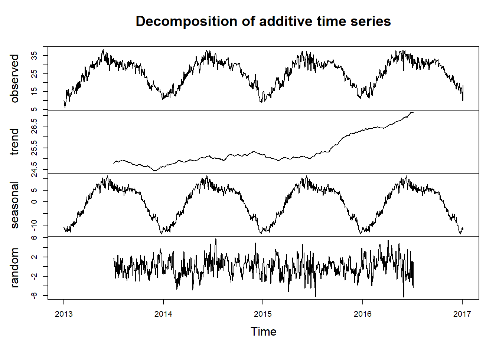

3 Análisis Exploratorio de Datos (EDA): Descomposición, Estacionariedad y la Diferenciación
En esta sección, proporcionaremos una vista general de los datos utilizando la evaluaciòn de la descomposición, estacionariedad y la diferenciación.
3.1 Descomposición
La descomposición de series de tiempo es una técnica esencial en el análisis de datos temporales, permitiendo desglosar una serie en sus componentes principales: tendencia, estacionalidad y ruido. Al aplicar esta técnica a la serie temporal de temperatura, se revela el comportamiento estacional observado previamente, así como la tendencia y la componente de ruido de manera detallada. Esta última representa la variabilidad aleatoria o irregular que no puede atribuirse a la tendencia ni a la estacionalidad previamente identificadas.

En las graficas anteriores se observa lo siqguiente:
La tendencia de la serie temporal indica un aumento gradual en las temperaturas a lo largo del tiempo, aunque inicialmente este incremento puede parecer moderado o bastante lento. Sin embargo, en los últimos dos años se ha observado un incremento más pronunciado, sugiriendo que el calentamiento global podría estar acelerándose. y esperando ese posible comportamiento al aumento en proximos años.
A pesar de que hay una tendencia lenta o moderada hacia el aumento de la temperatura al pasar los años, la estacionalidad parece mantenerse constante.
En cuanto al componente de ruido, se evidencian fluctuaciones que no pueden ser explicadas por la tendencia ni por la estacionalidad de la serie temporal de temperatura. A pesar de la presencia de estas fluctuaciones no sistemáticas, aún se percibe claramente la presencia de la tendencia y la estacionalidad en la serie de tiempo.
3.2 Estacionariedad
Para que una serie de tiempo sea considerada estacionaria, es importante que tanto la media como la varianza se mantengan constantes a lo largo del tiempo. Es decir, la serie no debe exhibir tendencias a largo plazo ni variaciones sistemáticas en su comportamiento a medida que transcurre el tiempo. Para lograr la estacionariedad, se deben cumplir los siguientes requisitos:
Media Constante: La media de la serie debe permanecer invariable a lo largo del tiempo, lo que indica la ausencia de tendencias significativas hacia arriba o hacia abajo en la serie.
Varianza Constante: Asimismo, la varianza de la serie debe mantenerse constante a lo largo del tiempo. Esto implica que la amplitud de las fluctuaciones alrededor de la media no experimenta cambios significativos a medida que progresa el tiempo.
Autocovarianza Constante: Es fundamental que la covarianza entre dos puntos de datos separados por un cierto intervalo de tiempo permanezca constante. En otras palabras, la relación entre los valores de la serie en diferentes momentos no debe cambiar a medida que avanza el tiempo.
Estos principios son fundamentales para garantizar la estacionariedad de una serie de tiempo, aunque en la práctica se pueden utilizar técnicas adicionales, como la diferenciación, para lograr este objetivo.
3.2.1 Verificar si la serie de temperatura es estacionaria
Para evaluar la estacionariedad de una serie de tiempo, podemos llevar a cabo varios métodos:
Realizar un análisis visual aplicando los principios previamente mencionados para detectar si la serie presenta una media y varianza constantes a lo largo del tiempo.
Aplicar la prueba de Dickey-Fuller, la cual busca determinar si una serie de tiempo posee una raíz unitaria. La presencia de esta raíz implica una tendencia determinística en la serie, lo cual contradice los principios de estacionariedad mencionados anteriormente. La hipótesis nula de esta prueba es que la serie de tiempo tiene una raíz unitaria, lo que indica no estacionariedad. Si el valor p asociado con la prueba es menor que un nivel de significancia predefinido (generalmente 0.05), se rechaza la hipótesis nula y se concluye que la serie de tiempo es estacionaria.
3.2.1.1 Análisis visual
- Enfatizando en las gráficas presentadas para la descomposición de la serie, se observa que esta no cumple estrictamente los principios de estacionariedad. Por ejemplo, la media no permanece constante y se observa la presencia de una tendencia ascendente.
3.2.1.2 Prueba de Dickey-Fuller
##
## Augmented Dickey-Fuller Test
##
## data: ts_data
## Dickey-Fuller = -2.0596, Lag order = 11, p-value = 0.5531
## alternative hypothesis: stationary- Debido a que el valor p (0.55) es superior al nivel de significancia de 0.05, se sugiere que la serie de tiempo posiblemente contiene una raíz unitaria y, por ende, no es estacionaria.
Concluyendo, empleamos la función ndiffs para determinar el número óptimo de diferenciaciones necesario para hacer que la serie de tiempo sea estacionaria. El objetivo es identificar el mínimo número de diferenciaciones requeridas para eliminar tanto la tendencia como la estacionalidad de la serie.
## [1] 13.3 Diferenciación
La diferenciación puede ayudar a estabilizar la media de una serie de tiempo al eliminar los cambios en el nivel de una serie de tiempo y, por lo tanto, eliminar (o reducir) la tendencia . Considerando las observaciones previas que indican que la serie temporal de temperatura no es estacionaria, se recurre a la diferenciación con el fin de lograr esta estacionariedad deseada.
Antes de aplicar la diferenciación, es importante tener en cuenta el número óptimo de diferenciaciones previamente determinado, que en este caso es uno. Por lo tanto, se procede a diferenciar la serie temporal una sola vez y se genera una nueva descomposición para evaluar nuevamente la estacionalidad y la tendencia en la serie diferenciada.
Teniendo en cuenta que en la serie hay estacionalidad y al mismo tiempo tendencia, se realiza una diferenciación con de lag de 360, ya que el periodo estacional se presenta en ese periodo, es decir cada 360 dias.
Aunque se presentan fluctuaciones alrededor de un nivel constante a lo largo del tiempo, ya no se percibe una tendencia tan definida de crecimiento.
Aunque la estacionalidad ya no es tan marcada, todavía se observa graficamente presente en la serie temporal, y además, comienza a hacerse evidente que la serie ya se puede empezar a considerar estacionaria.
3.3.1 Prueba de Dickey-Fuller para la serie diferenciada
## Warning in adf.test(ts_data_dif): p-value smaller than printed p-value##
## Augmented Dickey-Fuller Test
##
## data: ts_data_dif
## Dickey-Fuller = -7.151, Lag order = 10, p-value = 0.01
## alternative hypothesis: stationary- Se observa que el valor p es 0.01. El cual es menor a el nivel de significancia de 0.05. Esto sugiere que es improbable que la serie de tiempo tenga una raíz unitaria, lo que indica estacionariedad en la serie diferenciada.